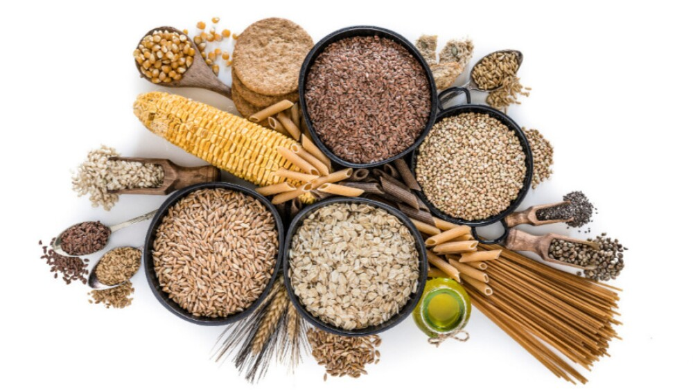
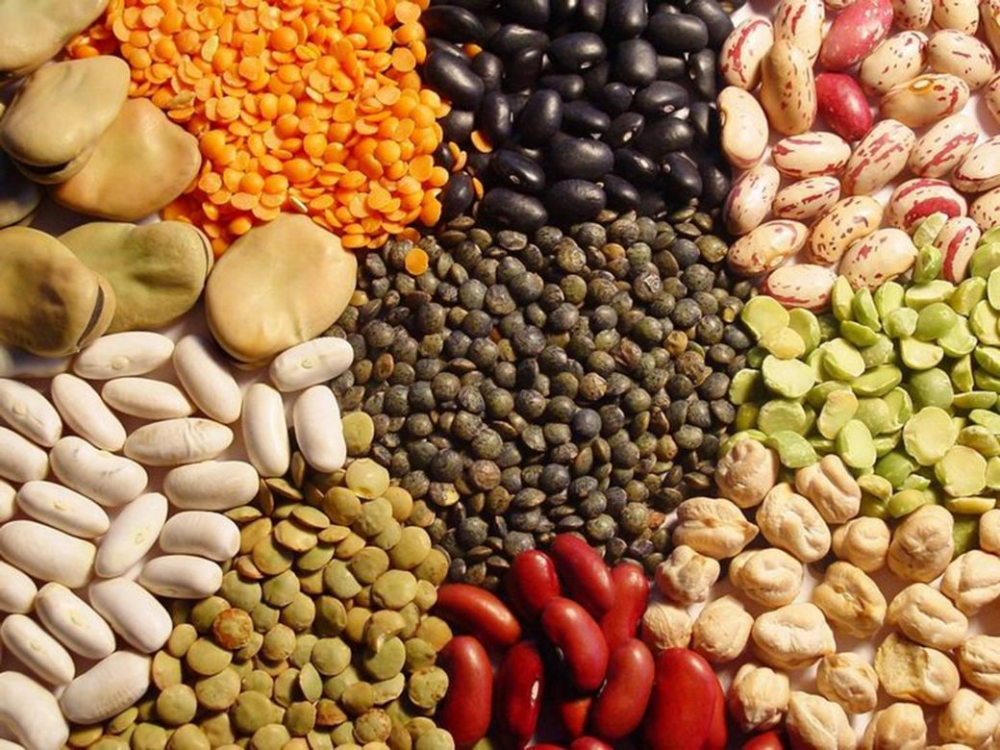

Plato de buen comer
El plato del buen comer es una herramienta visual desarollada por la Organizacion Mundial de la Salud (OMS)
y la organizacion de las Naciones Unidas para la Alimentacion y la Agricultura (FAO) para promover una
alimentacion saludable y equilibrada.

Cereales
Los cereales, de acuerdo con la FAO, son la fuente de alimentos más importante del mundo, ya
que éstos se producen para satisfacer las necesidades alimentarias de los humanos, así como para la alimentación del ganado
siendo una fuente directa de los insumos que impulsa la producción pecuaria en todo el orbe

Leguminosas
Las leguminosas son las plantas de las que se cosechan las legumbres que son un fruto formado por una vaina
que encierra en su interior una semilla o una hilera de semillas, que se consumen secas

Secciones del plato del buen comer
- Frutas y verduras(50% del plato):Deben ser frescas,congeladas,enlatadas o secas.Se recomienda consumir al menos 5 porciones al dia.
- Cereales integrales(25% del plato):Deben ser integrales,como el arroz integral,quinoa,avena,etc.Se recomienda consumir al menos 3 porciones al dia.
- Proteinas(15% del plato):Pueden ser de origen animal (carne,pescado,huevos,lacteos) o vegetal (legumbres,frutos secos,semillas).Se recomienda al menos consumir al menos 2 porciones al dia
- Grasas saludables(10% del plato):Deben ser grasas insaturadas,como las encontradas en el aceite de oliva,aguacate,frutos secos,etc.
Cantidades de comida recomendadas
- Frutas:2-3 porciones al dia (1 porcion = 1 fruta mediana o 1/2 taza de frutas frescas o congeladas)
- Verduras:3-5 porciones al dia (1 porcion = 1 taza de verduras frescas o congeladas)
- Cereales integrales:Arroz integral 1/2 taza cocida al dia,Pan integral:1-2 rebanadas al dia,Avena:1/2 taza cocida al dia
- Proteinas:Carne:2-3 porciones al dia (1 porcion = 3oz o 85g de carne cocida) Pescado 2-3 porciones al dia (1 porcion = 3oz o 85g de pescado cocido)
Huevos:1-2 huevos al dia
- Legumbres:1-2 porciones al dia (1 porcion = 1/2 taza cocida)
- Grasas saludables:Aceite de oliva:2-3 cucharadas al dia Aguacate:1/2 aguacate al dia Frutos secos:1/4 taza al dia
Recordatorio
Recuerda que estas son recomendaciones generales y que las necesidades nutricionales pueden variar segun la edad,sexo,peso y nivel
de actividad fisica.Es importante consultar con un profesional de la salud o un nutricionista para obtener recomendaciones personalizadas.